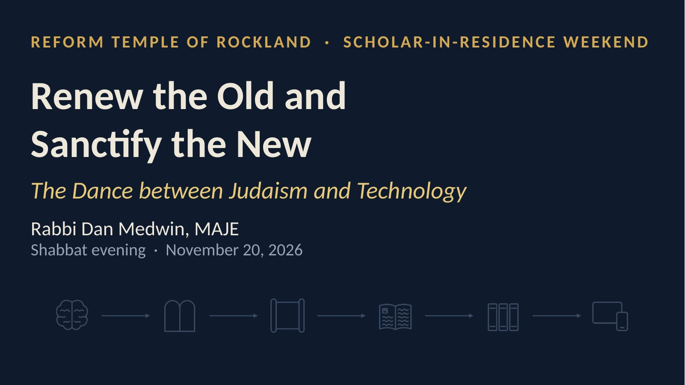

Sermon highlights · 5 minutes
Renew the Old and Sanctify the New
The Dance between Judaism and Technology · Rabbi Dan Medwin · Reform Temple of Rockland · November 20, 2026

0:00 / 5:16
Sermon highlights · 5 minutes
The Dance between Judaism and Technology · Rabbi Dan Medwin · Reform Temple of Rockland · November 20, 2026
